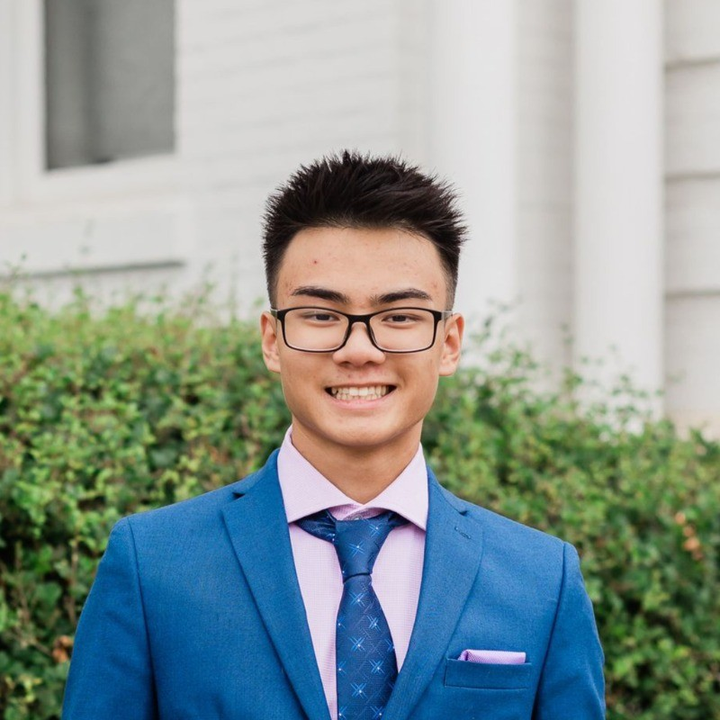

01
Hand To Hand Wizardry
An hommage to Boomer Shooters in a modern style

About
Gameplay Engineer
I love solving problems in a structured manner: clean, easy to use, with room for extension. I strive to build solutions that explains itself so that everyone has the easiest time when working with it (especially me).
I am currently looking for a role as a Gameplay Engineer. Have a look at my stuff !
Selected Work
A few projects I can talk about at length. Tap a card to open the full write-up: what it is, what I built, and the case study behind it.

Case Study
When opening multiple menus in-game and closing one, the cursor would lock and be disabled. This affected the player mostly when they died and then paused the game. After closing the pause menu, the cursor would disappear on the Death Screen, soft-locking the player.
To solve this, I worked backward and traced the issue to how each menu handles cursor and input states independently. Opening any menu switched the input map to "UI" and enabled the cursor, closing it set the map back to "Player" and disabled the cursor. Consequently, if a user closed a top menu while a lower menu remained open, the input map still reverted to "Player" and hid the cursor even though the user was still technically in a menu.
My first idea was to count the number of menus open and if there were none, switch the player input map back from “UI” to “Player”, but I could see this having many problems later on, specifically in terms of scalability and flexiblity. The biggest problems in my mind were, if there were other input map states that needed to be accounted for, or if the player needed to move while in a menu for whatever reason.
My second idea was to tie the Input Map switching and cursor enabling in a way that would allow the Input Maps to be tracked. I planned to keep track of what Input Maps the player changed to with a Stack system. When I change the Input Map of the player, push the Input Map to a Stack and when I want to switch back to the previous Map, I pop the Stack back.
By centralizing Input Map changing into a single Stack-based manager, the menu systems remained entirely decoupled while gaining far greater flexibility across the project. Instead of menus individually managing cursor states, the logic was bound directly to the current input map: entering a "UI" map automatically enables and reveals the cursor, while popping back to a "Player" map hides and locks it. This eliminated the soft-lock bug entirely.
Case Study
Accessing garbage data cleanly and iteratively was inefficient and restrictive. Based on the type of garbage, I had to use an if-else chain or a switch statement every time I wanted to access data for a specific piece of waste, creating hard-to-maintain code for data that should have been tied together naturally.
To solve this problem, I wanted to find a way to access data cleanly without relying on long conditional chains.
My first idea was to use the Garbage class that was already created, but that introduced problems with how we handled picking up garbage. When a player collected garbage by shooting it, the GameObject holding the Garbage class was destroyed. This meant we couldn't store references to the garbage objects in an array, as those references would be destroyed along with the garbage.
My second idea was to pivot to a count system using individual variables for each waste type (int organicCount, int recyclableCount, int nonRecyclableCount). But this solution didn't sit right with me. Trying to access any data this way still required a condition for every type of garbage in the game, forcing long switch cases or chains of if-else statements.
Since we already had a WasteType enum for the three garbage categories, I wanted a quick, scalable way to access the count data directly using that enum. To achieve this, I replaced the standalone variables with a Dictionary Lookup Table that mapped each WasteType enum key to its corresponding integer count value.
The result of this lookup table was that accessing count data became much cleaner and more efficient throughout the entire project. All I had to do was pass the WasteType into the dictionary to retrieve or update the count. I loved the ease of Lookup Table’s that I ended up refining and using it in future projects (see Hand To Hand Wizardry Case Study 2).
Career
Where I've worked and what I focused on while I was there.